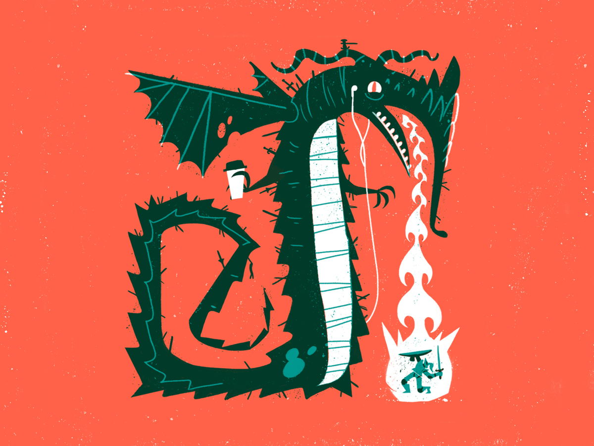

moodboard
collor pallet
Ik heb voor deze kleuren gekozen omdat ik een "kinderlijke" vibe wou creëren. Vandaar zijn ze fel en kleurrijk
De Typografie vond ik hier gewoon goed bij passen vooral de letter "g" vond ik leuk in de typo. Ik associeerde het wel met het drakenthema.
inspiratie

schetsen
Ik heb mijn logo eerst uitgewerkt op papier voordat ik digitaal begon (de digitale uitwerking hiervan is natuurlijk in de website zelf te zien.)
De spatiebalk en de pijltjes heb ik ook zelf uitgetekend in illustrator
voorontwerp in xd design
Javascript
- In de header steekt een jquery plugin.Hier wordt sneeuw op het "header" element gezet. Dit past bij het thema "Snow Dragons"
- Het drakenlogo in de header heb ik laten ronddraaien "on scroll" met javascript. Ik heb dit erin gestoken om het iets meer dynamischer te maken.
- Het drakenlogo in de header heb ik laten ronddraaien "on scroll" met javascript. Ik heb dit erin gestoken om het iets meer dynamischer te maken.
- Er is nog een jquery plugin toegevoegd waarmee alle elementen die de klasse ".box" hebben gekregen smooth infaden wanneer erover gescrold wordt.
- Onderaan de webpagina is een form met validatie.